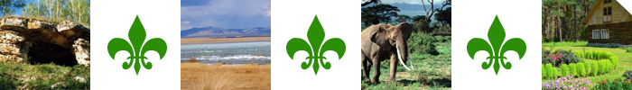

|

лассификаци€ природных достопримечательностей¬одные - достопримечательности, основа которых - океаны, образующие остальные водные достпримечательнотсти: реки, озера и т.д. «оологические - достопримечательности, св€занные с охраной, опекой животного мира. Ѕотанические - достопримечательности, св€занные с растительным миром и его охраной. омплексные - природно-рукотворные пам€тники природы, с определ€ющим фактором ценности их дл€ человека. Ќо и это деление неокончательно и очень условно, посколько один и тот же уголок природы может быть дорог по разным причинам. √рани между разновидност€ми пам€тных природных мест размыты. 
|